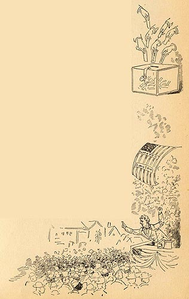

|
 Along with its depiction of the "aristocratic" nature of a community like Dawson's Landing, Pudd'nhead Wilson also includes an episode exposing the way democracy works there. We hear the same man who fought a duel for his family's honor plotting to bribe voters and fling mud against his opponent. In the image for the bottom of page 211 the illustrator chose to include a black face among the crowd listening to an election speech, though as the other marginal image reminds us, only white men were allowed to cast votes. The Barrett Collection, UVA PS 1317 .A1 1894 |